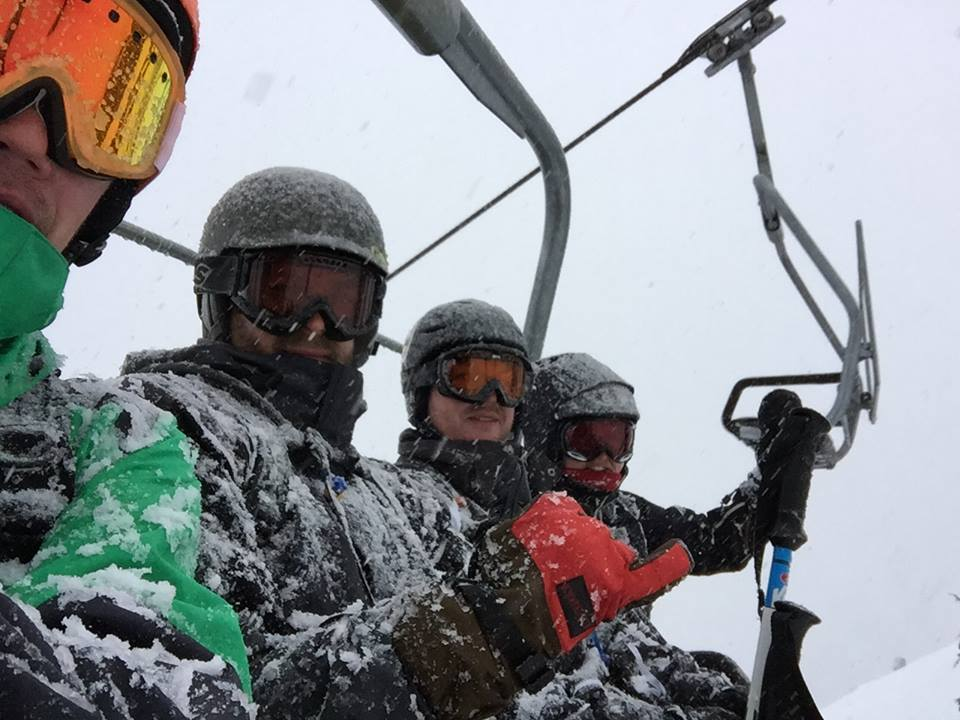
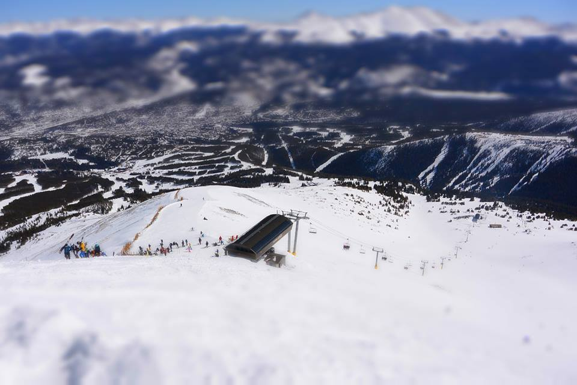
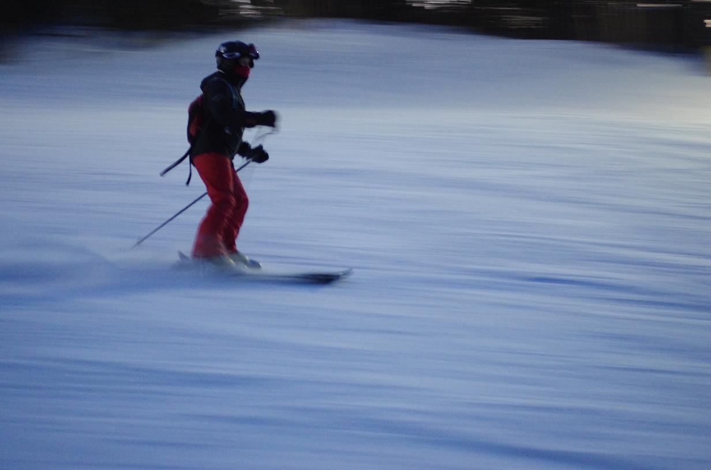
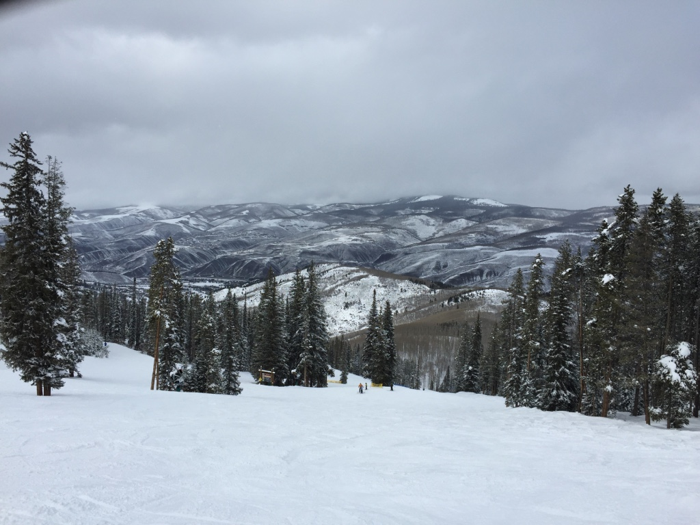
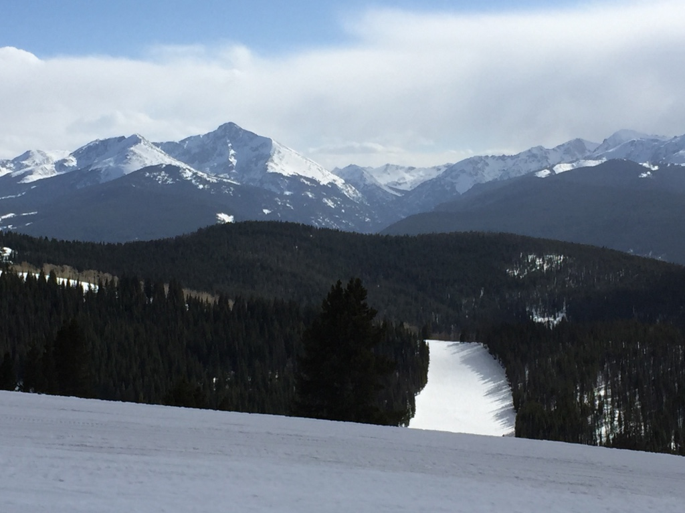

A little off the beaten path in the Sierra Mountains of California, Kirkwood is the perfect mountain respite from the daily grind. Rent a condo or book a hotel room for a long weekend and enjoy some of the most challenging skiing in the Tahoe area. A level 5 avalanche rating guarantees steep slopes so make sure your edges are freshly sharpened and your boards and skis are waxed! With more limited crowds than other Tahoe area ski resorts, you can walk your front door and be on a lift in minutes to maximize your runs. Cook in or make the drive to a local restaurant and casinos after your day on the slopes to relax and unwind.
Arapahoe Basin (A-Basin) was a repeat visit from the 2014 season and a favorite among the group. A first stop to ski at A-Basin from sea level locations can present altitude acclimation challenges so pacing yourself and resting as needed is recommended. In 2015 the back bowls had the best conditions to practice your skills and take in the view. After a full day on the mountain, the 6th Alley Bar and Grill at the base serves up cold refreshments and food when you need to refuel before your next stop.

Breckenridge Ski Resort is nestled in the Tenmile Range of the Rocky Mountains surrounded by handfuls of Colorado fourteeners. Breck is only 80 miles from Denver and 20 minutes south of Frisco off route 70. With five peaks and recently opened Peak 6, there are days of skiing to enjoy from beautifully groomed trails or make your own fresh tracks off of Imperial Bowl or Chair 6. Breckenridge is a charming town with a brewery, distillery, local shops, and even fine dining all within walking distance from the mountain. Best of all Breck is less than an hour from four other Vail owned resorts on the Epic Pass.

Keystone is about 13 miles north of Breckenridge and a great family resort. An old mining town gives this resort lots of character and charm. From snow tubing to ice skating to the skiing itself there is something for everyone in your family to enjoy. The only resort on the Epic Pass with night skiing is an added bonus to get in a few more runs in the evening. A world class terrain park has every imaginable obstacle and feature to explore or just enjoy the show from the lifts that bookend the park. While a more laid back resort, you will not be bored with three mountains to ski and hundreds of trails from groomers to the untouched snow in the trees. The village at the base of Keystone offers many pubs and restaurants to unwind at after you've earned your turns.

Beaver Creek is about 20 miles west of Vail and as part of the Epic Pass, there's no reason not to spend a day on the mountain. Luxury abounds at Beaver Creek from the escalators to carry you to the slops to the freshly baked chocolate chip cookies handed out at 3pm daily at the base. A frequent host of World Cup events, the steep and challenging terrain should be no surprise and will test your quads, ability to turn on a dime, and stopping power. Beaver Creek villages addresses everything you need from fine dining to shopping to lodging.

Vail is always a treat for late season skiing. Whether Mother Nature delivers copious amounts of snow or not, opportunities to enjoy yourself and relax are always possible. Head to higher altitude to find the best conditions and pack in as many runs as possible. Pack a lunch to grill at one of the many outdoor grilling areas. Belle's Camp at Blue Sky Basin's is hugely popular with a stunning view of the Gore Range. Don't forget to take advantage of the outdoor concert series, watch the Pond Skimming Championships, or bargain hunt for next year's ski equipment at the end of season sales.